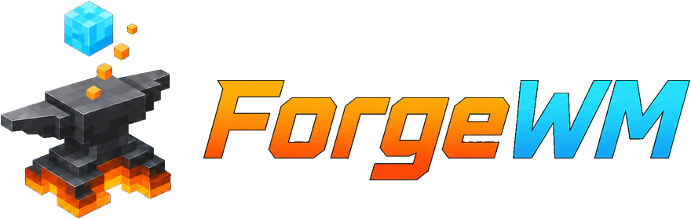
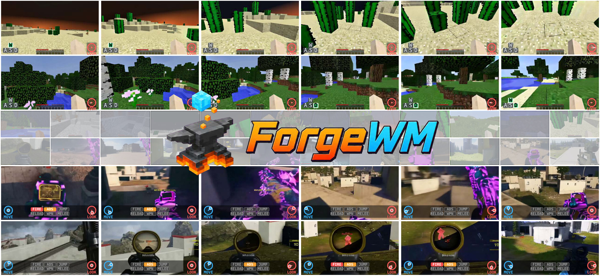
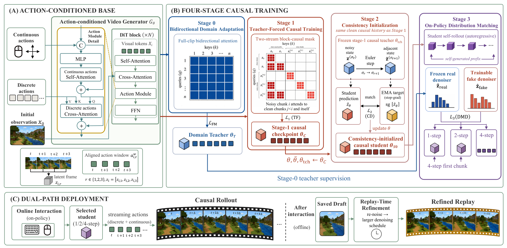
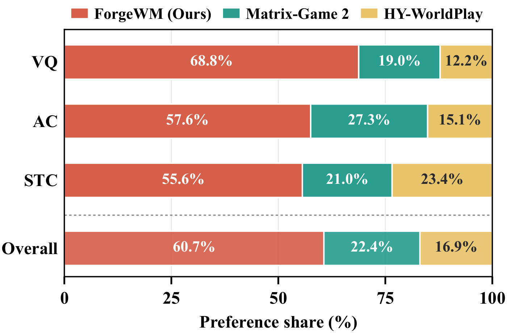

A playable world model you drive with keyboard, mouse or a gamepad — at one denoising step, in real time.
1CUHK 2Tencent PCG 3Fudan University 4Shanghai AI Laboratory 5HKUST
* Equal contribution · † Corresponding author · xyli@se.cuhk.edu.hk

A bidirectional action-conditioned generator becomes a family of causal students that run at a fixed, tiny denoising budget — while keyboard, mouse and stick motion stay frame-aligned to every compressed latent chunk.

Bidirectional fine-tuning on the target game. Frozen afterwards and reused as the teacher in Stage 3.
Teacher-forced block-wise causal attention turns the generator autoregressive without losing control fidelity.
Causal consistency distillation compresses the sampling trajectory and unlocks few-step generation.
The student rolls out itself and is supervised at the distribution level by the frozen Stage-0 teacher.
Stage 0 and Stage 1 are siblings from the same base generator; Stage 3 consumes Stage 2 as its student and Stage 0 as its teacher. Every stage ships as a runnable config — full hyperparameters are in the repository and the paper.
Same reference frame, same action sequence, same seed, four denoising steps on both sides. Left: Matrix-Game 2’s own distilled model. Right: ForgeWM-4.
Every clip on this page is a complete, unedited rollout — 81 frames, no frame selection, no post-processing. The dark strip under each rollout is its control track: the keys held, the camera dial, and the whole action trajectory with a playhead at the current frame — the exact input stream the model was conditioned on.
The same scene at three denoising budgets — identical initial frame, identical action, identical seed. Fewer steps means a different sampling trajectory, so the rollouts are not meant to match frame for frame. What matters is that they are all equally plausible worlds: the one-step student holds its own against the four-step one while running 2.2× faster.
Three rollouts from one initial frame, differing only in the action held for the whole sequence. Nothing else changes — not the checkpoint, not the seed. The camera goes where it is told.
Extra denoising helps — but rerunning the model from noise gives you a different rollout, not a better version of the one you just played. So we spend the extra budget on the saved draft instead: the deployed one-step student re-noises and refines its own chunks, in order, under the recorded actions.
(A) and (B) are frame-aligned by construction — (B) starts from (A)'s saved latents. (C) restarts from noise, so it drifts to a different realization. That divergence is the argument.
1,000 paired Minecraft trajectories for reference-aligned metrics; 462 constant-action videos for no-reference metrics. All systems share the same initial frames and controls.
| Model | IQ ↑ | LPIPS ↓ | AQ ↑ | Subj. Cons. ↑ | Flow Prof. ↑ | KCtrl ↑ | Mouse Acc. ↑ | Latency ↓ | FPS ↑ |
|---|---|---|---|---|---|---|---|---|---|
| Matrix-Game 2 | 0.6282 | 0.6443 | 0.4583 | 0.7349 | 0.9343 | 0.9156 | 0.7061 | 370.9 ms | 32.35 |
| HY-WorldPlay | 0.6133 | 0.6172 | 0.4855 | 0.9466 | 0.8288 | 0.9286 | 0.5818 | 2164.3 ms | 7.54 |
| ForgeWM-1 | 0.6776 | 0.6529 | 0.4807 | 0.8279 | 0.9403 | 0.9545 | 0.7848 | 168.2 ms | 72.10 |
| ForgeWM-2 | 0.6865 | 0.6171 | 0.4814 | 0.8349 | 0.9429 | 0.9740 | 0.8268 | 239.7 ms | 50.31 |
| ForgeWM-4 | 0.6788 | 0.6168 | 0.4860 | 0.7613 | 0.9420 | 0.9740 | 0.8102 | 369.6 ms | 32.47 |
Best per column in bold. ForgeWM leads six of the seven quality and control metrics; HY-WorldPlay's Subject Consistency advantage comes with the weakest motion-profile agreement and mouse accuracy in the table. Efficiency columns are reported for context and are not bolded — they are measured on a single H20 at 352×640 and exclude loading, VAE decoding and file writing. KCtrl is a camera-trajectory sign test on opposite-action pairs.
| Method | LPIPS ↓ | Ddraft ↓ |
|---|---|---|
| One-step draft | 0.6532 | — |
| Replay refinement | 0.6155 | 0.1970 |
| Direct four-step | 0.6168 | 0.6187 |
LPIPS against the paired reference; Ddraft against the saved draft. Refinement matches from-noise four-step quality while staying far closer to the rollout that was played.

41 participants, 615 selections, 205 judgments per criterion, three-way blind comparison with hidden identities and randomized order. ForgeWM-4 takes 68.8% of visual-quality preferences, 57.6% on action accuracy and 55.6% on spatiotemporal consistency — 60.7% pooled.
Swap the action interface from mouse-and-keys to dual analog sticks and gamepad buttons, swap the data, and run the same four stages. No architectural change — and a separate checkpoint lineage, not a multi-domain model.
Checkpoints for all four Minecraft stages, the two few-step students, and the CrossFPS inference model — plus the pre-encoded training data, 40,000 GF-Minecraft clips at 640×352 — are on HuggingFace.
# base model + ForgeWM checkpoints bash scripts/download_models.sh huggingface-cli download ForgeWM/ForgeWM --local-dir ./ckpts # drive it (stage3 is the ForgeWM-4 student) python inference.py --config_path configs/stage3_dmd.yaml \ --checkpoint_path ckpts/stage3/model.pt \ --image_path demo_images/forest.png --action_type forward
We also thank the authors of Self-Forcing, CausVid, Wan 2.1, minWM, GameCraft and HunyuanVideo.